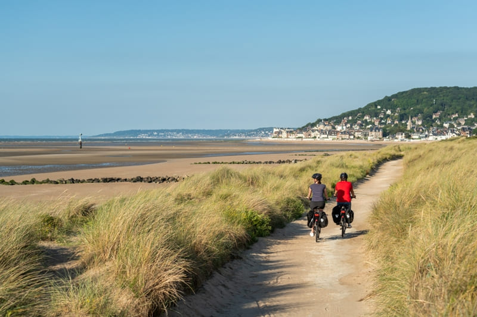
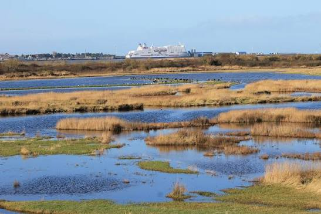

Des paysages à explorer

Les marais

Entre littoral et arrière-pays, la Côte Fleurie offre de nombreux espaces naturels à découvrir à pied ou à vélo. Voies vertes, marais et réserves naturelles permettent d'explorer une nature riche et variée, au fil des paysages et des cours d'eau.

